uniqueness of a final topology
1. Proposition
Let  be a set, 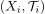 be a class of topological spaces and 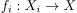 be a class of set-theoretic maps
Then the final topology is unique.
be a set, 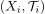 be a class of topological spaces and 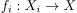 be a class of set-theoretic maps
Then the final topology is unique.
2. Proof
Suppose  and 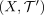 are final topologies
Then, since 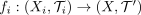 is continuous, we conclude that 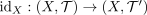 is by universal property also continuous
and 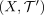 are final topologies
Then, since 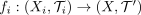 is continuous, we conclude that 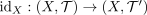 is by universal property also continuous
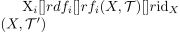
Hence by reasons of symmetrie, we get 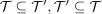 (see: Feinere Topologie und Identitätsabbildung) and hence 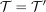